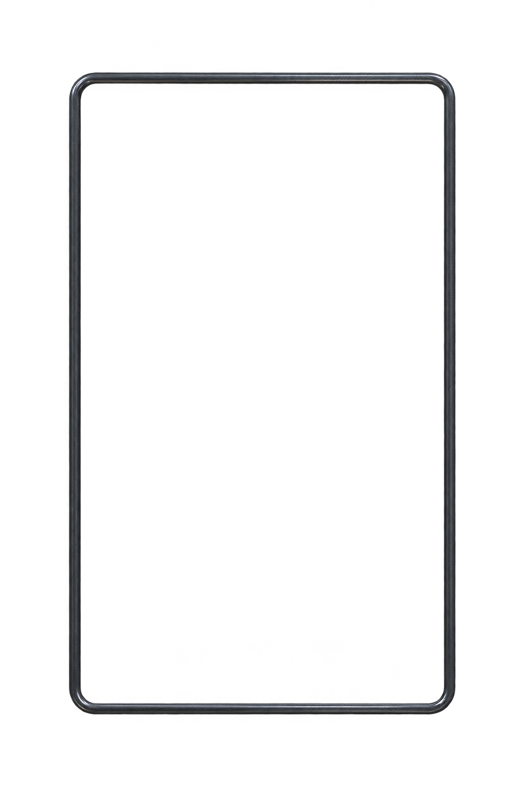

promptglass
Read the whole script ↗Find your
own pace.
A quiet line to follow. A rehearsal you start yourself.
YOU, TO PROMPTGLASS
6paragraphs
prepared
prepared
100%
YOUR EYELINE

Word 1 of 11959.5 seconds remainingParagraph 1 of 6
Preparation never starts the rehearsal. Pause freezes both preparation and any running rehearsal. Resume only continues reading when that common control paused it.
Reading follows measured word positions, not a fixed scroll speed. Font and window changes keep your place. Backgrounding pauses reading; returning stays paused.
Every word.
In its place.
Select a paragraph to bring its first word to the eyeline. These are the complete original words in the reading plane above.
Remaining time is an estimate from word progress and your selected pace, with punctuation attached to its word.